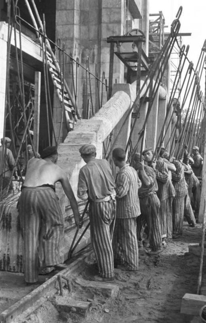

Many "miracles" haunt the history of economic thought, only to reveal themselves as sophisticated government misinformation upon closer examination. The biggest and most persistent is the narrative surrounding the German economy between 1933 and 1938. At its center stands Hjalmar Schacht, President of the Reichsbank and Minister of Economics, romanticized as a 143 IQ genius who engineered a financial "Wirtschaftswunder" that supposedly collapsed hyperinflation and unemployment single-handedly. However, solid objective analysis of institutional shifts and balance sheets reveals that Schacht did not build a recovery plan—he created a huge and unsustainable Ponzi scheme that sacrificed civilian welfare to engineer a war machine.
The "miracle" was never real; it was merely the silence before the inevitable explosion of a system that had long since abandoned the laws of economic gravity. — Source
The Collapse of Central Bank Independence
The initial prerequisite for this illusion was the systematic breakdown of central bank independence. In modern macroeconomic theory, the main protection against political authorities' short-term inflationary decisions is central bank autonomy. Yet Schacht allowed the Reichsbank's total coordination ("Gleichschaltung"), transforming the country's monetary anchor into a dependent instrument of the Nazi regime's rearmament objectives.
Since Schacht served simultaneously as Reichsbank President and Minister of Economics, he was able to eliminate the institutional checks and balances necessary to preserve monetary stability. Due to this power concentration, the regime's insatiable demand for rearmament began to control the money supply rather than real productive output. As institutional barriers between fiscal spending and monetary expansion collapsed, the stage was fully set for hidden indebtedness that the German economy could never possibly repay through civilian productivity.
The MEFO Bill System: History's Boldest Shadow Banking
This erosion of institutional integrity provided Schacht the cover he needed to implement the MEFO (Metallurgische Forschungsgesellschaft) bill system, now regarded as history's most audacious shadow banking operation. By establishing MEFO—essentially a front firm—Schacht avoided direct money printing due to constraints of international treaties and the growing threat of hyperinflation. This entity, lacking actual industrial assets, issued state-guaranteed five-year bills to pay weapon manufacturers. Since these bills were kept off official government balance sheets through MEFO accounting, the Hitler regime could finance massive military expansion without alerting international markets or the German public to skyrocketing public debt.
Schacht had essentially invented an off-balance-sheet liability management prototype to hide the reality that the state was practically bankrupt. The hidden debt grew to over 12 billion Reichsmark by the time these bills matured, creating a pressure chamber of underlying inflation that could only be released by seizing foreign assets.
The Illusion of "Full Employment"
The illusion of stability created by shadow financing was reinforced by manipulated narratives regarding labor. A key component of the Nazi "miracle" myth is the regime's claim that unemployment had been eliminated—but this ignores the fact that this "fake employment" resulted from state coercion rather than real market expansion.
Millions of citizens, including Jewish people, women, and political dissidents, were simply removed from unemployment statistics, rendered invisible in the data. Simultaneously, the Reichsarbeitsdienst (RAD) was established: young Germans were forced into mandatory, low-wage work camps resembling military conscription rather than career development. Due to the brutal suppression of trade unions and the prohibition of strikes, German workers lost their ability to negotiate and were transformed into cogs in a militarized industrial machine. This artificial "full employment" did not increase living standards; instead, it masked a sharp decline in production.

Autarky and Forced Commerce
As the labor market was being militarized, Schacht used a policy of autarky and forced commerce to shield the German economy from international market pressures. The "New Plan" of 1934 was not an exercise in economic sovereignty but a desperate reaction to the depletion of gold and foreign exchange reserves. Schacht encouraged trading partners to accept "Special Reichsmark" credits usable only for German industrial goods, establishing bilateral clearing agreements especially with Balkan and South American countries. This move cut Germany off from global competition and turned those countries into captive satellites of the German economy, creating a command-and-control trade model plagued by inefficiencies and making vital raw material procurement increasingly dependent on political leverage.
The System Reaches Its Breaking Point
By 1937, Schacht's "genius" financial engineering finally reached its limits. The economy hit full capacity, and continued liquidity injection via MEFO bills threatened to trigger a hyperinflationary spiral. Schacht, a pragmatic technocrat, realized his system had reached the breaking point and advised a pivot toward civilian exports and decreased military spending. However, in the Hitler regime—where ideological dogma consistently trumped rational economic limits—Schacht's warnings were dismissed as "defeatism." His step-by-step removal from power and the transfer of economic control to Hermann Göring's "Four Year Plan" marked the end of even the pretense of economic logic.
The Hitler regime did not pursue reform but an increase in aggression against looming bankruptcy. The first of several opportunistic actions required to prevent the debt-ridden German state from collapsing was the 1938 annexation of Austria (Anschluss), which allowed the regime to seize the gold reserves of the Austrian Central Bank.
The Stark Warning for Modern Economics
The economic policies of the Schacht era provide a stark warning about the dangers of abandoning institutional independence and transparency for short-term political gain. Schacht was not a miracle worker; he was a balance sheet magician who mortgaged the future of a nation to fund a catastrophic war. The perceived recovery of the 1930s was a perfectly crafted pure illusion, built on the disenfranchisement of labor, the manipulation of data, and a shadow banking system that made war an economic inevitability.
For any modern student of economics, the Schacht legacy serves as a definitive case study in how the erosion of central bank autonomy and the use of hidden debt can transform a national economy into a ticking time bomb. The institutional safeguards that Schacht dismantled—central bank independence, transparency in balance sheets, and honest labor statistics—are not bureaucratic niceties but essential protections against exactly the kind of catastrophic mismanagement that characterized the Nazi economy. The "miracle" was never real; it was merely the silence before the inevitable explosion of a system that had long since abandoned the laws of economic gravity.
Selected references
- Barkai, A. (1990). Nazi economics: Ideology, theory, and policy. Yale University Press.
- Overy, R. J. (1994). War and economy in the Third Reich. Oxford University Press.
- Shirer, W. L. (1960). The rise and fall of the Third Reich: A history of Nazi Germany. Simon & Schuster.
- Tooze, A. (2006). The wages of destruction: The making and breaking of the Nazi economy. Allen Lane.